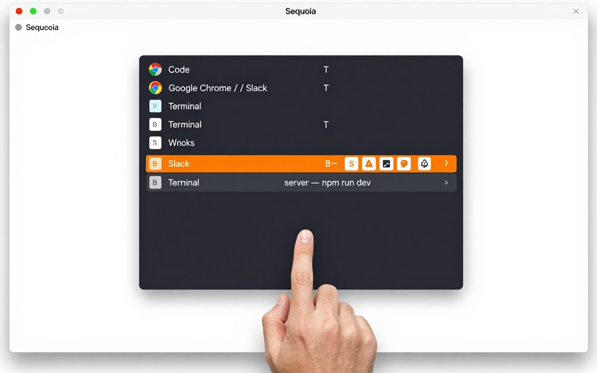
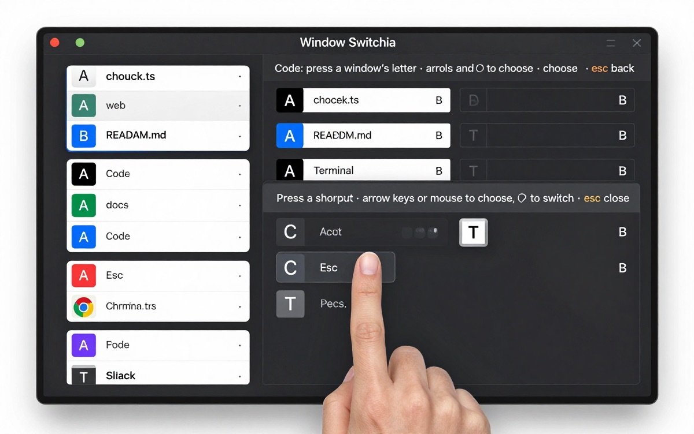
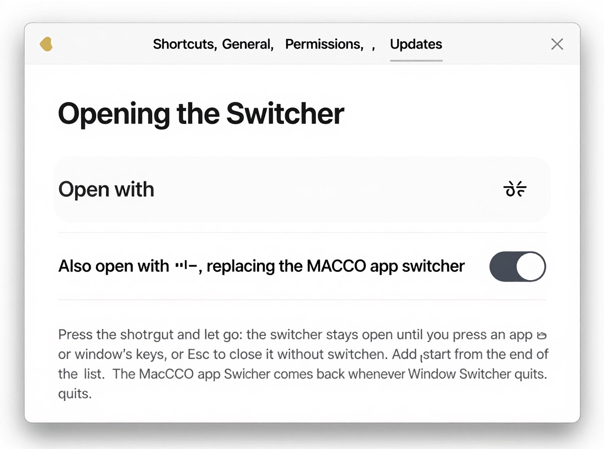

Features / ⌥⇥ that waits
⌥⇥ that waitsPress ⌥⇥ and let go. It waits for you.
You don't have to hold a key down while you read the list. The switcher stays open until you press an app's key, a window's key, or Esc.
● Opening it needs no permission
Let go. Read. Then press.
The macOS switcher closes the moment you let go of ⌘. This one stays, so you can take a second to find what you want.
- One key gets you there. Press an app's key, or an app's key and then a window's letter.
- ↩ goes back to the last app. The selection starts on the app you used before this one.
- Add ⇧ to start from the end. ⇧⌥⇥ opens with the last item in the list selected.

AI draft · replaceA wrong key costs you one Esc.
Pressed the wrong app's key? Esc takes you back to how the switcher opened, with the same selection, and you type again. Press Esc twice to close.
- Esc Esc always closes. It's a fast way out from anywhere.
- ⌫ steps back too. Use whichever key your finger finds first.
- Click outside to close. Nothing switches.

AI draft · replace⌥⇥ is free. So is anything else you pick.
macOS doesn't use ⌥⇥ as a system shortcut, so Window Switcher can take it and leave ⌘⇥ alone. Coming from Windows? It's Alt-Tab, right where your thumb expects it.
- Pick any shortcut. Record a new one in Settings → General.
- Or use ⌘⇥ as well. One switch makes Command-Tab open it too. See Replace ⌘⇥.
- It works next to password fields. A focused password field in another app doesn't stop the shortcut.

AI draft · replaceSettings that change it.
In Settings → General.
Good to know.
Do I have to keep holding ⌥?
No. Press ⌥⇥ and let go. The switcher stays open until you choose something or close it.
How do I close it without switching?
Press Esc. If you've already pressed an app's key, the first Esc steps back and the second closes. Clicking outside the panel closes it too.
Does ⌥⇥ clash with anything?
macOS doesn't use it system-wide. A few text fields use it to type a tab character. If you need that, pick another shortcut in Settings → General.
Does it need a permission to open?
No. Opening the switcher needs no permission at all. Accessibility is only needed to list and switch windows. Without it you still see and switch apps.
Press ⌥⇥. Then the next key you want.
Free for the Mac. No account, nothing running in the background, and every app has a key the moment it's installed.
Download Window Switcher for Mac